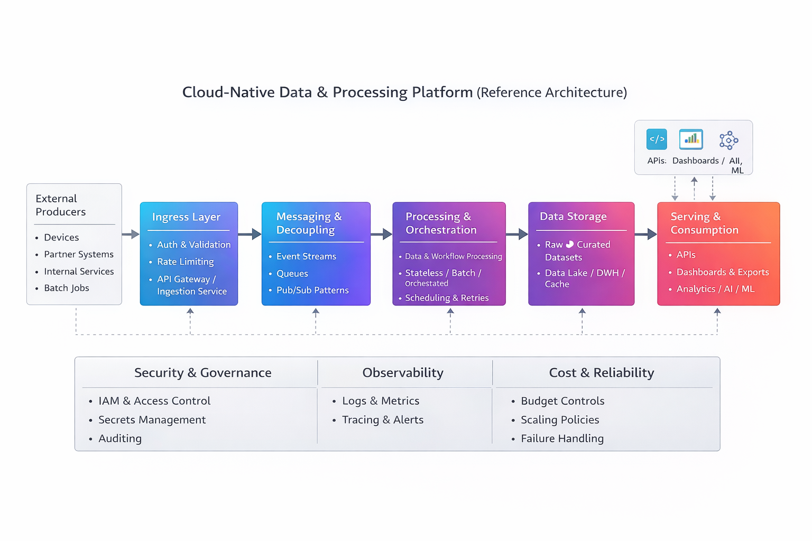

Technical Architect with 15+ years of experience across mobile, backend, and cloud platforms.
I design end-to-end cloud platforms focused on secure ingestion, decoupled processing, workflow orchestration, scalable storage, and reliable delivery through APIs and services. In recent years, I’ve also worked on integrating intelligent processing workflows as part of modern cloud systems—while keeping solutions production-ready, observable, and cost-aware.
Years Experience
Projects Delivered
Clients / Domains
The following diagrams are simplified, high-level representations of the types of architectures, integrations, and platform workflows I have designed or contributed to throughout my career across mobile, cloud, connectivity, and intelligent systems.
This diagram represents a generic cloud-native platform design based on my experience building and evolving backend systems on AWS and GCP. The focus is on secure ingestion, decoupled processing, workflow orchestration, scalable storage, and multiple consumption patterns.
The architecture is intentionally abstract and product-agnostic. It demonstrates how cloud platforms are designed to handle scale, reliability, observability, and cost control, while supporting analytics and AI/ML workloads as downstream consumers.

Architecting cloud-native platforms with API-first design, integration patterns, and Python-based pipelines (including orchestration concepts). Focused on observability, cost-aware design, and secure platform foundations (auth, access control, governance).
Led modernization across the LBG iOS ecosystem, including SwiftUI migration and platform architecture improvements. Partnered across teams on API-driven integrations and intelligent customer journeys with a focus on stability and performance.
Led development of connectivity and diagnostics platforms. Built telemetry capture and logging workflows used for diagnostics and operational insights.
Delivered iOS solutions across domains. Built modular mobile foundations and integration layers interacting with backend services, focusing on performance and reliability.
Spearheaded modernization of LBG's core banking app by leading the migration from UIKit to SwiftUI. Improved architecture supporting intelligent customer journeys and strengthened performance and UI consistency.
Cross-platform diagnostic solution for in-car system testing. Delivered automation integration, real-time logging, and Bluetooth signal diagnostics across iOS, Android, and Windows platforms.
Background monitoring tool to collect signal metrics during field testing. Logged GPS, cellular strength, and Wi-Fi/Bluetooth signals in real time for engineering teams.
Performance measurement tools to analyze data transfer rates inside IVI systems. Visualized network quality using maps and telemetry.
Voice-guided testing app with TTS & SR capabilities for automotive QA teams. Integrated Firebase backend and dynamic form generation.
Flutter app for a tailoring business. Features included measurement logging, employee tracking, dark mode, and MVVM architecture.
*These projects were developed as part of my roles in respective organizations. Descriptions include only public or generalized information.*